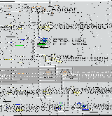

Über AbiWord
Über Open Source
Index
Inhalt
Neuigkeiten
Version prüfen
Einführung
Installation
Erste Schritte
Der Arbeitsplatz
Text eingeben
Formatieren
Befehle editieren
Paragraphen
Stile
Objecte einfügen
Drucken
Einstellungen
Abkürzungen
abisource.com
FAQ
Credits
Suchen |
|
Installation von AbiWord auf Linux / PowerPC
Willkommen bei der Gemeinschaft der AbiWord Benuzter!
Die aktuelle Version von AbiWord (0.7.9) sollte problemlos auf jedem
Linux System mit einem INTEL (oder INTEL-kompatiblen) Prozessor installieren und funktionieren.
AbiWord wurde in Pakten mit unterschiedlichen Industrie-Standards
verpackt, um die Installation auf Ihrem System zu vereinfachen. Es gibt ebenso eine GNOME-spezifische Implementierung, die sich gut in den Desktop einfügt:
- RPM -- RedHat 5.2 oder später, SuSE 6.1 oder später
- DEB -- Debian 2.1 (Slink) oder später
- Slp -- Stampede Linux
- TAR -- funktioniert überall
Sie können die Gnome Version mit Helix Update installieren. Dies ist ein sehr nützliches Tool und sehr empfehlenswert zur Installation der GNOME-Version.
Eine detailiertere Version dieser Anleitung ist im README beinhaltet.
RPM
Die RPM Installation ist sehr einfach.
-
Herunterladen der Datei (abisuite-0.7.9-1.i386.rpm,
2.6MB).
-
Superuser werden und folgenden Befehl eingeben
rpm - Uvh abisuite-0.7.9-1.i386.rpm
This release of AbiWord
was built on a host with all applied updates from
ftp://ftp.linuxppc.com/linuxppc-1999/updates/.
Speziell wird libstdc++-2.10.0-0a.ppc.rpm für die Installation dieser RPM Datei benötigt. Ebenso kann static .tar.gz package versucht werden, wenn Sie dieses Upgrade vermeiden wollen.
Wenn Sie irgendwelche unbefriedigte Abhängigkeiten haben, sollten Sie
diese installieren, bevor Sie
Abiword installieren können.
-
Dies wird AbiWord und die benötigten Dateien in /usr/share/abisuite installieren.
Symbolische Links wie AbiWord und abiword werden in /usr/bin/X11 kreiert werden aber nicht zum aktuellen Programm. Mit der -
Uvh Option statt - wird die vorhandene Version von AbiWord ersetzt, falls Sie ein
Update vornehmen wollen.
-
Für weitere Informationen über Abhängigkeiten in RPM Packeten, kontaktieren Sie bitte README.
DEB
- Herunterladen der Datei (
abisuite_0.7.12_i386.deb, 4.6MB).
- Superuser werden und folgenden Befehl eingeben
dpkg - I abisuite_0.7.12_i386.deb
- Dies wird AbiWord und die benötigten Dateien in /usr/share/abisuite installieren. Symbolische Links wie AbiWord und abiword werden in /usr/bin/X11 kreiert werden aber nicht zum aktuellen Programm.
- Weiter Informationen zu DEB Paket-Abhängigkeiten finden sich in
README.
SLP
Die SLP Installation sollte so einfach sein, wie die DEB oder RPM Installation.
Wir besitzen im Moment keine Stampede Linux Distribution und haben unsere Stampede
Linux Pakete nicht getestet. Die Dateien wurden automatisch mit Alien erzeugt.
Wenn Sie die SLP Distribution verwenden, zögern Sie nicht, Ihre Ergebnisse an AbiWord development mailing list
zu schicken.
- Herunterladen der Datei (
abisuite-0.7.12.slp, 4.3MB).
- Installation über den 'Stampede package manager'.
- Dies wird AbiWord und die benötigten Dateien in /usr/share/abisuite installieren.
Symbolische Links wie AbiWord und abiword werden in /usr/bin/X11 kreiert werden aber nicht zum aktuellen Programm.
- Weiter Informationen über SLP Paket-Abhängigkeiten finden sich in
README.
Es gibt zwei Versionen von Tar-Dateien:
Unser Ziel ist es, einige der auf dem System vorhandenen Bibliotheken zu verwenden. Wenn Sie nicht wissen, was das bedeutet, benutzen Sie einfach die statische Version
- Herunterladen der Datei (
abisuite-0.7.12-Linux_i386_static.tar.gz, 4.3MB).
- Kopieren der Dateien in ein Verzeichnis, indem Sie Schreibrechte haben:
gunzip - c abisuite-0.7.12-Linux_i386_static.tar.gz | tar xvf -
... oder, falls Ihr tar-Befehl die Option ' z' versteht:
tar xvzf abisuite-0.7.12-Linux_i386_static.tar.gz
Beide Befehle werden das Verzeichnis abisuite-0.7.12-Linux_i386_static anlegen.
- Wechseln Sie in dieses Verzeichnis und werden Sie Superuser.
- Starten Sie das Installations-Skript mit:
/install.sh
- Standardmäßig wird AbiWord sich und die benötigten Dateien in das Verzeichnis /usr/local/AbiSuite
auf Ihrer Festplatte installieren. Sie werden die Möglichkeit haben, dies zu ändern.
- Sie haben ebenso die Möglichkeit, Links auf das Programm in einem
bin
Verzeichnis zu erstellen. Standardmäßig ist dies in /usr/local/bin der Fall.
- Weitere Details finden sich in README.
- Dynamic Tar Files
- Die Installation der dynamischen Dateien (abisuite-0.7.12-Linux_i386_dynamic.
tar.gz, 2.6MB)
ist identisch. Es ist einfach _ dynamic durch _ static
in den Schritten 1 und 2 zu ersetzen. Weitere Informationen über die Bibliotheken und die verwendeten Versionen finden sich in README.
.
Abspeichern unter Linux
Wenn Sie unter Linux abspeichern wollen, ist es nötig, in Ihrem /home Verzeichnis
abzuspeichern, es sei denn, die verwenden gleichzeitig mehrere Betriebssysteme (siehe
unten). Wenn Sie viele Dokumente haben sollten Sie diese in einem Unterverzeichnis wie
zum Beispiel /home/dokumente. abspeichern.
Wenn Sie abspeichern wollen, benötigen Sie Schreibrechte in diesem Verzeichnis
besitzen. Manchmal kann es vorkommen, daß Sie Dokumente aufgrund fehlender
Schreibrechte nicht speichern können. In diesem Fall sollten Sie "Save As" verwenden,
um die Datei irgendwo anders abzuspeichern.
Gemeinsames Verwenden von Windows und Linux
Wenn Sie Windows und Linux gemeinsam verwenden und die Dateien unter beiden
Systemen verwenden wollen, dann müssen sie Ihre Dateien auf der FAT oder FAT32
Partition oder auf einer Diskette abspeichern, da Windows keinen Zugriff auf
Linux Paritionen besitzt. Sie sollten die Dateien in einem Verzeichnis wie
"Eigene Dateien" abspeichern. Unter Linux müssen in diesem Verzeichnis
Schreibrechte haben. Ist dies nicht der Fall, so kontaktieren Sie Ihren Systemadministrator.
Gemeinsames verwenden von Beos und Linux
Wollen Sie Beos und Linux gemeinsam verwenden, sollten sie die Dateien
auf dem BEOS-Filesystem abspeichern.
KDE und AbiWord
Nachdem AboWord installiert wurde, können Sie AbiWord für die Benutzung mit KDE
konfigurieren. Klicken Sie mit der rechten Maustaste auf den Desktop und wählen Sie
"New" und dann "Application".

Dann sollten Sie "Abiword" in die erscheinende Box tippen.

Danach tippen Sie einen geeigneten Kommentar und in die executable
box "abiword", (alles in kleinen Buchstaben).
Wenn Sie die AbiWord Icons wollen, müssen Sie diese von /usr/share/Abisuite/icons,
in /usr/share/icons kopieren, dann können Sie sie auswählen. Der Bildschirm
sollte nun wie unten aussehen.

Nun müssen Sie nur noch den "OK" Knopf drücken und das Abiword Icon
wird auf Ihrem Desktop erscheinen. Wollen Sie es in Ihrem Panel haben, so ziehen Sie
ihn es einfach darauf und lassen es dort los. |